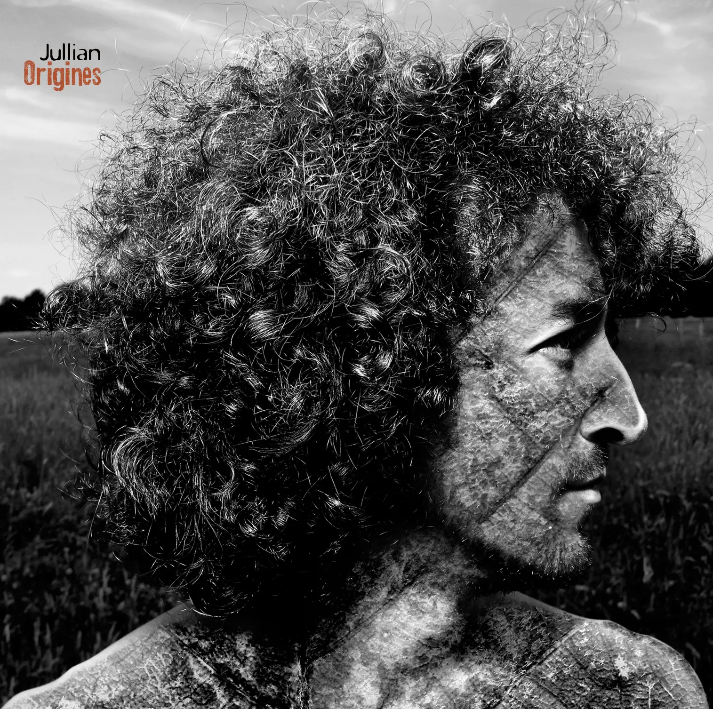

hello @ jullianstudio.com
© 2026 Jullian Champenois. Tous droits réservés.
La voix et la guitare ont accompagné mes premiers élans musicaux, à travers l'écriture et la composition de chansons... et se sont ensuite combinés aux merveilles de l'électronique et de l'informatique musicale..
Chanteur, auteur-compositeur, musicien et producteur de musique professionnel depuis 2002, j'ai une vaste expérience dans la production audio, le design sonore, le mixage et l'écriture créative.

J'ai commencé à écrire, composer, chanter et jouer des chansons à l'âge de 15 ans. Après des centaines de concerts, 2 albums auto-produits et plusieurs singles, j'ai commencé à composer et à produire des morceaux pour différents artistes. J'aime envisager chaque projet et chaque morceau comme une entité particulière, évoluant à travers différents courants et genres, avec une touche unique et une approche particulière que de nombreuses années à l'étranger ont également nourries.
Je suis disponible pour les artistes solos qui cherchent à donner vie à leurs chansons, ainsi que pour les producteurs de vidéos et de jeux qui recherchent une ambiance musicale originale et singulière.